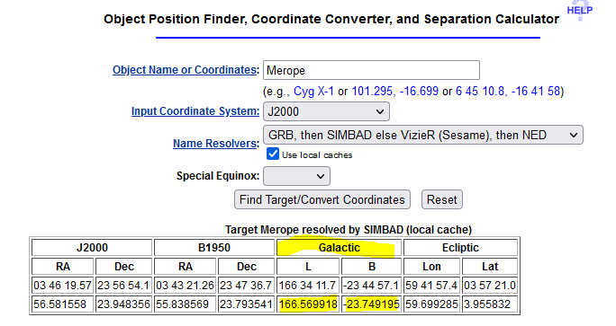

Occasionally people will research the ancient star maps looking for star systems that may have had different names back in the 21st Century so that the can go visit them. Or they may wish to visit the nearest star in the milky way to another galaxy so they can get an uninterupted view. We will be providing some tools on this page to help convert to the XYZ coordinate system that we use today.
The galactic coordinate system is a celestial coordinate system in spherical coordinates, with the Sun as its center, the primary direction aligned with the approximate center of the Milky Way Galaxy, and the fundamental plane parallel to an approximation of the galactic plane but offset to its north. It uses the right-handed convention, meaning that coordinates are positive toward the north and toward the east in the fundamental plane.
The first galactic coordinate system was used by William Herschel in 1785 and a number of different systems adopted until the final version was specified in 1958 by the International Astronomical Union (IUA)
If you know the distance to the object in light years and the Declination and Ascension in degrees then you can use this form to calculate the XYZ coordinates.
You can use the Nasa HEASARC tools to look up a system and get the Declination and Ascention. In the example below the declination is 166.569918 and the ascention is -23.749195 you may need to search additional catalogs to find distances.

The tool below will convert the coordinates but bear in mind that the ancient records may not be completely accurate. If you want to search the coordinates that it has calculated you can use the spansh system search using reference coordinates and sorting by distance and this will give you a list of nearby systems.